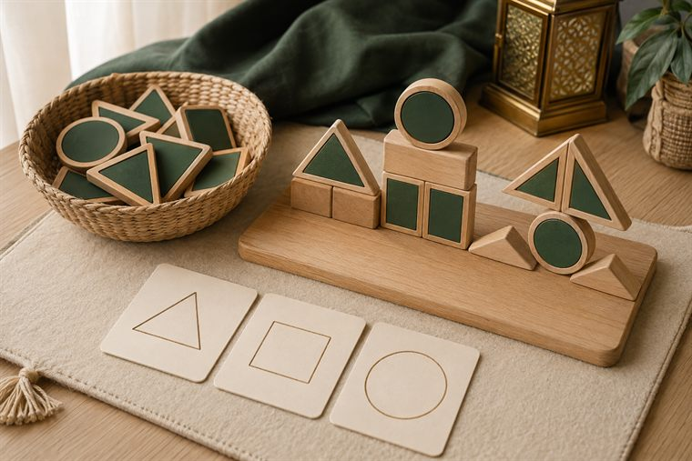
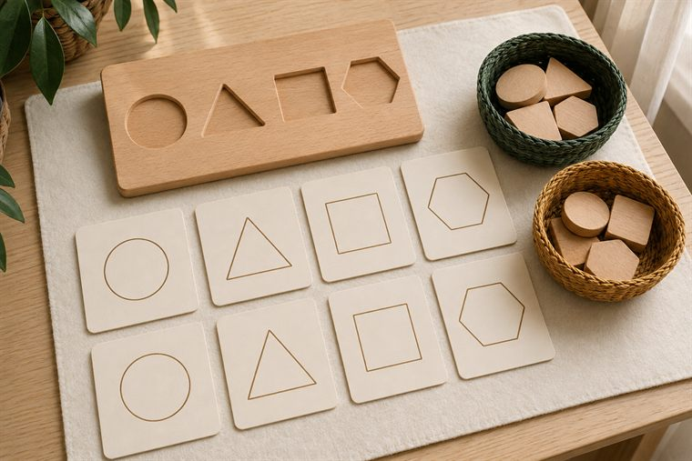
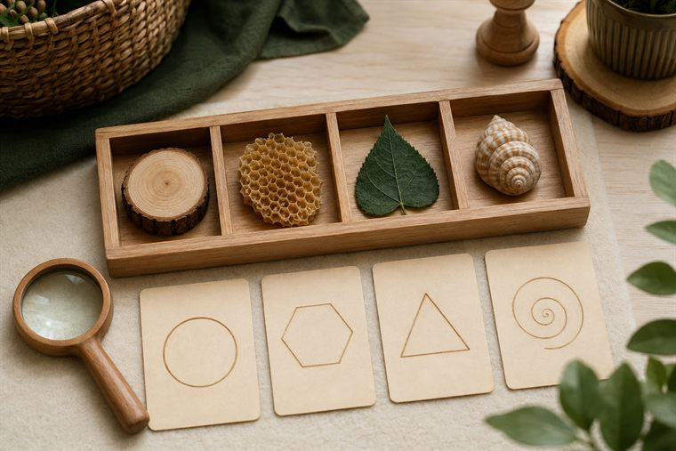
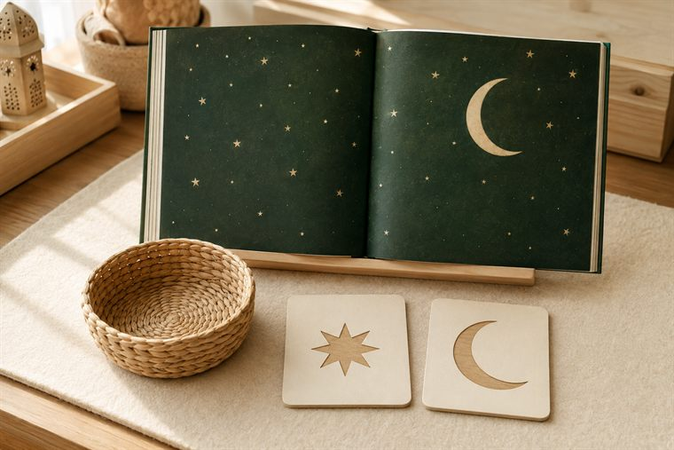

مساحاتُ لعبٍ حرّ بأدواتٍ تعليمية. لكثرة الأعداد نفتح ٤ أركانٍ متوازية بمراكز مختلفة؛ وزّعي المجموعات عليها وتتناوب بينها في الفترتين حتى لا تتكدّس. كل ركنٍ لمسةٌ تطبيقية خفيفة على فكرة اليوم. (أعمار ٥–٦: بناء/تلوين جاهز/قصّ ولصق/ترتيب/اختيار بطاقات/أدوار/حركة — بلا كتابة أو رسمٍ حرّ.)
دروس اليوم المتكاملة: كتابي المنير (مفهوم التدبّر · الآيات ١–٥) · علّمني ربي (مفاتيح التعلّم ٢) · أحبّك ربّي (الرّبّ: قصّة إبراهيم عليه السلام) · مهاراتي (الأشكال الهندسية).

🧱 ساحة البناء · «أبني بالأشكال وأتقن»
يبني الطفل بالمكعبات والبلاط المغناطيسيّ أشكالًا هندسية (مثلّثٌ · مربّعٌ · دائرة)، ويركّبها بناءً متقنًا؛ ويتذكّرُ أنّ اللهَ أتقن خلقه بأشكاله. (لا تلوين هنا — التلوينُ في ركن فنوني.)
🧰 الأدوات: مكعباتٌ خشبية · بلاطٌ مغناطيسيّ بأشكال · قاعدةُ بناء · بطاقاتُ أشكالٍ نموذجية.
📋 دور المعلمة: تُتيح البناءَ ثم تسمّي الأشكالَ وتنسبُ الإتقانَ لله: «مَن أتقن خلقَ كلِّ شيء؟».
🌱 المعنى المركزي: خلقُ الله متقنٌ بأشكاله؛ فأُتقِنُ بنائي شكرًا.
📜 قوانين الركن: أبقى في ركني حتى ينتهي الوقت · أحافظ على أدواته · أتشارك وأنتظر دوري · أُعيد الأدوات مرتّبة.

🧩 أدرك وأستمتع · «أطابقُ وأصنّفُ الأشكال»
يطابقُ الطفل الشكلَ بمثيله، ويصنّفُ بطاقاتِ الأشكال في سِلالها (المثلّثات · المربّعات · الدوائر)؛ لعبًا بلا كتابة.
🧰 الأدوات: بطاقاتُ أشكالٍ للمطابقة · لوحةُ تصنيف · سِلالٌ ملوّنة.
📋 دور المعلمة: تنمذجُ ثم يستكشفُ الطفل؛ توجّهُ النظرَ إلى نظامِ الله في الأشكال.
🌱 المعنى المركزي: أرى نظامَ الله في الأشكال؛ فأتفكّرُ وأعرف.
📜 قوانين الركن: أبقى في ركني حتى ينتهي الوقت · أحافظ على أدواته · أتشارك وأنتظر دوري · أُعيد الأدوات مرتّبة.

🔎 أكتشف ما حولي · «أشكالٌ في خلق الله»
يبحثُ الطفل بالمكبّر عن الأشكال في عيّناتٍ طبيعية آمنة (قرصُ الشمس دائرة · خليّةُ النحل سداسيّة · ورقةٌ مثلّثة)، ويقولُ عند كلِّ اكتشاف: «سبحان مَن أبدعها».
🧰 الأدوات: عيّناتٌ طبيعية آمنة · مكبّراتٌ وعدسات · بطاقاتُ أشكالٍ مصوّرة.
📋 دور المعلمة: توجّهُ الملاحظةَ: «أيُّ شكلٍ ترى؟ ومَن خلقه؟»؛ تقودُ التسبيح.
🌱 المعنى المركزي: أشكالُ الخلق آياتٌ؛ سبحان مَن أبدعها.
📜 قوانين الركن: أبقى في ركني حتى ينتهي الوقت · أحافظ على أدواته · أتشارك وأنتظر دوري · أُعيد الأدوات مرتّبة.

📚 أقرأ · «مَن خلق النجوم؟»
يتصفّحُ الطفل قصّةً مصوّرة عن النظر في السماء والنجوم والتفكّر فيها (رموزُ سماءٍ ونجومٍ بلا رسمٍ لنبيّ)، ويحاورُ: مَن خلق النجمَ والقمر؟
🧰 الأدوات: قصصٌ مصوّرة عن السماء والنجوم · بطاقاتُ كلمة-صورة · مصاحفُ في حواملها.
📋 دور المعلمة: تحاورُ: «مَن خلق النجمَ والقمر؟» بلا تجسيدٍ لإبراهيم عليه السلام؛ تقودُ التفكّر.
🌱 المعنى المركزي: النظرُ في خلق الله يهدي إلى معرفته.
📜 قوانين الركن: أبقى في ركني حتى ينتهي الوقت · أحافظ على أدواته · أتشارك وأنتظر دوري · أُعيد الأدوات مرتّبة.
تفاصيلُ الأركان الستّة وروتينُها في تبويب «خريطة الأركان» أعلى الصفحة، ولكلِّ لقاءٍ ركنان تطبيقيّان داخل دليله.